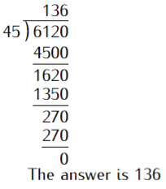

1 Chapter 1: Natural Numbers
Natural Numbers
Natural Numbers are also called Counting numbers. They consist of \(0, 1, 2, 3, 4, 5, 6, 7, 8,\) \(and\, 9\) digits. Place value is the position of a digit in a number. Total value is the product of the digit and its place value. A prime number is a number with only two factors that is, one and it’s self. e.g \(\,2, 3, 5, 7, 11.\)
Odd numbers are numbers ending with the digits: \(1, 3, 5, 7, or \,9.\)
Even numbers are numbers ending with the digits: \(0, 2, 4, 6, or\, 8.\)
1.0.1 Solved Examples
Find the place value and the total value of digit 3 in the numbers below.
\(47\, 387 \,645\) \((1mk)\)
\(2\, 312 \,464\,085\) \((1mk)\)
\(12\, 594 \,534\) \((1mk)\)
The place value of \(3\) in the first number is a hundred thousand.\ Its total value is:\(3\times100\, 000=300\, 000\)
The place value of \(3\) in the second number is a hundred million. \Its total value is: \(3\times100 ,000 000=300 \,000 \,000\)
The place value of \(3\) in the third number is tens.\ Its total value is: \(3\times10=30\)
All prime numbers less than ten are arranged in descending order to form a number.
Write down the number formed \((1mk)\)
What is the total value of the second digit? \((2mks)\)
The number formed is: \(7 \,532\)
Total value is as calculated below:
In a 3-digit number, the tens digit is thrice the unit digit and the hundreds digit is four times the unit digit. Also, the sum of its digits is 16. Find the number. (3mks)
Let the digits be xyz \[ \begin{split} y&=3z\\x&=4z\\ x+y+z&=16\\4z+3z+z&=16\\ 8z&=16\\ \end{split} \]
The prime numbers less than 10 are multiplied to form a number.
a) Write down the number formed. ^space \((2mks)\)
b) State the total value of the first digit in the number formed in 2(a) above. \((1mk)\)
All prime numbers between ten and twenty are arranged in descending order to form a number.
a) Write down the number. \((2mk)\)
b) State the total value of the third digit of the number formed in (i) above \((1mk)\)
All prime numbers less than 10 are arranged in a descending order to form a number which forms a quotient of \(1~076\) with a certain number. Calculate the number \((3mks)\)
A two-digit number is such that the sum of the ones and the tens digit is 10. If the digits are reversed, then the new number formed exceeds the original number by 54. Find the number. \((4mks)\)
In a three-digit number, the hundreds digits is 4 more than the units digit and the tens digit is twice the hundreds digit. If the sum of the digits is 12, find the three digits. Write the number. \((4mks)\)
A 3-digit number has a 4 in the hundreds place. It has a greater digit in the tens place than in the ones place. The sum of the digits is 6 which is my number. \((3mks)\)
In a three-digit number, the hundreds digit is equal to the tens digit and is 2 more than the ones digit. The number formed by reversing the digits is 19 times the sum of the digits. Find the original number. \((4mks)\)
The sum of the digits of a two-digit number is 15. When the number is subtracted from the number formed by reversing the digits, the difference is 27. Find the number. \((4mks)\)
A certain two-digit number is equivalent to five times the sum of the digits. It is found to be 9 less than the number formed when the digits are interchanged. Find the number. \((3mks)\)
The product of the digits in a two-digit number is 24. Four times the ten digit exceeds the unit digit by 10. Calculate the number. \((3mks)\)
1.1 Rounding Off
The following examples explain in detail how to round off a whole number or a decimal number.
1.1.1 Solved Examples
Round off the following numbers to the nearest number indicated in the brackets:
a) 246 852 (thousands) \((1mk)\)
b) 3 442 (tens) \((1mk)\)
c) 0.00897 (thousandths) \((1mk)\)
a) 247 000
b) 3 440
c) 0.009
Round off the following numbers to the nearest numbers indicated in the brackets:
a) Thirty-seven million, six hundred and forty-seven thousand, three hundred and forty-one. (100 000). \((1mk)\)
b) 324 481 (ten thousands) \((1mk)\)
c) 46.18702 (Hundredth) \((1mk)\)
A firm was reported to have made a profit of \(Ksh. ~90,578,463.\) Two daily newspaper gave the figure, one to the nearest \(1,000,000\) and the other to the nearest \(100,000\). Find the difference the rounded off figures? \((2mks)\)
A number was rounded off to the nearest 1,000 and given as 150,000. Which of the following numbers was likely to have been rounded off? \((1mk)\)
a) 150,960
b) 149,680
c) 149,240
What is the difference between 14.643 rounded off to the nearest tenth and 21.247 rounded off the nearest hundredth? \((2mks)\)
Kelvin, Grace, Ciru, and Njihia are playing a game. The winner is the person whose number is smallest when rounded to the nearest tenth. Kelvin’s number is 0.355, Grace’s number is 0.199, Ciru’s number is 0.261, and Njihia’s number is 0.959. Who is the winner? \((2mks)\)
1.2 Operations
This includes addition, subtraction, multiplication and division of numbers.
1.2.1 Solved Examples
Njoroge had \(2,568\) bags of beans each weighing \(90 Kg\)., he sold \(1,324\) of them.
a) How many kilograms of beans were left? \((2mks)\)
b) If he added 632 more bags of beans, how many kilograms of beans did he end up being with? \((2mks)\)
a) One bag of beans weighs 90 Kg. \[ \begin{split} 2,568~bags~weighs~&=90\times2,568 \\ &=231,120~Kg\\ 1,324~bags~weighs~&=90\times 1,324\\ &=119,160~Kg\\ Amount~of~beans~left~ &=231,120-119,160\\ &=111,960~Kg \end{split} \]
b) \[ \begin{split} (632\times90) + 111,960\,Kg &=56,880+111,960 \\ & =168,840\,Kg. \end{split} \]
Compute the quotient: \(6120\div 45\) \((3mks)\)

The Amos family borrows $ 20,880 to purchase a new car at a special 0% interest rate. The car dealer allows them 5 years to pay back the amount they borrow and requires equal monthly payments. How much are their monthly payments? \((2mks)\)
Since there are 12 months in each year, they must make a total of \(5\times12 = 60\), payments on the loan. Dividing $ 20,880 by 60 will result in the monthly payment:

The Amos’ monthly payment will be $ 348.
A bus charges \(Ksh.~ 150\) as fare from Embu to Meru. It carries a capacity of 18 passengers. However, it can carry 5 more passengers but will have to pay a penalty of \(Ksh.~100\) at each of the 8 police checkpoints it passes through. The distance between the two towns is \(91 ~km\) and the cost of petrol is \(Ksh.~ 102\) per litre. If the bus uses 1 litre for every \(7~ km\), calculate;
a) How much is gained if the bus does not overload? \((4mks)\)
b) How much is lost if the bus overloads? \((4mks)\)
A vegetable vendor had 1,652 cabbages. He sold 835 cabbages on the first day and 326 cabbages on the second day. He added 413 cabbages to the remaining stock on the third day.
a) How many cabbages did he have at the end? \((3mks)\)
b) If he sold all the cabbages at an average cost of \(Ksh.~ 15\), how much money did he collect? \((1mk)\)
Perform the following divisions: \((6mks)\)
a) \(2,668\div58\)
b) \(867,594 \div 2,317\)
c) \(0.0021\div 14\)
A bookshop had \(29,424\) exercise books which were packed in cartons. each carton contained \(24\) exercise books. The mass of an empty carton was 2 Kg and 11 Kg when full.
a) How many cartons were there? \((1mk)\)
b) What was the total mass of empty cartons? \((2mks)\)
c) What was the total mass of the books alone? \((2mks)\)
The average mass of students in a class of 45 was 46 Kg at the beginning of the year. At the end of the that year, they had each gained 4 Kg. Calculate:
a) Their total mass of the students at the end of the year. \((2mks)\)
b) The difference between their total mass at the beginning and at the end of the year. \((2mks)\)
A matatu had 23 passengers at the beginning of the journey. Twelve passengers alighted at the first stop while 9 boarded. Six of those who boarded at the first stop alighted at the second stop and 12 got in. The matatu did not stop again up to the final destination. The charges from the starting point were Ksh. 50 up to the first stop, Ksh. 70 up to the second stop, and Ksh. 85 up to the final destination.
a) How many passengers alighted at the final destination? (3mks)
b) How many passengers were carried by the matatu through the journey? (2mks)
c) How much money was collected during the trip? (5mks)
a) State the value of digit 7 after the operations below.
i) \(3.45 \times 20.54\) (2mks)
ii) \(0.345 \times 2.054\) (2mks)
iii) \(34.5\times 0.2054\) (2mks)
iv) \(0.0345\times 2.054\) (2mks)
b) states the value of the second digit in the product 675 . (2mks)